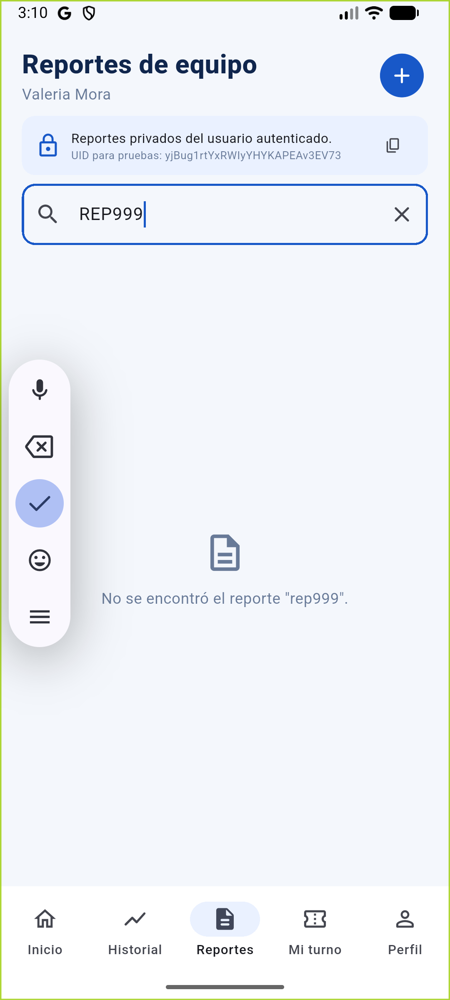
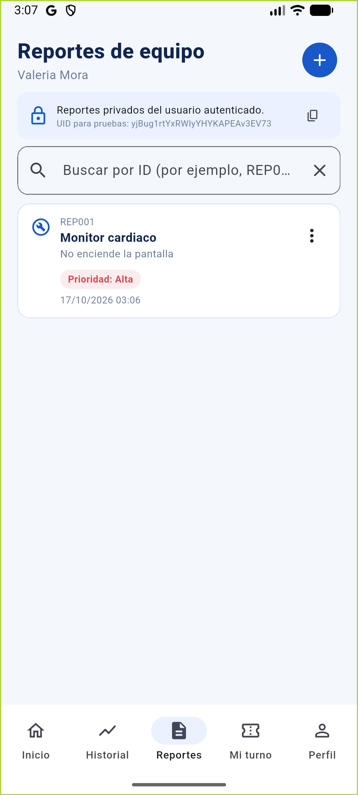
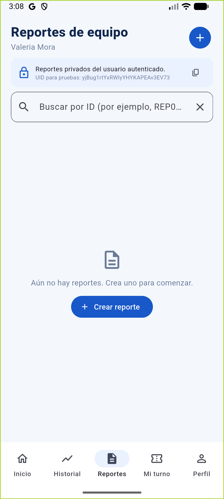
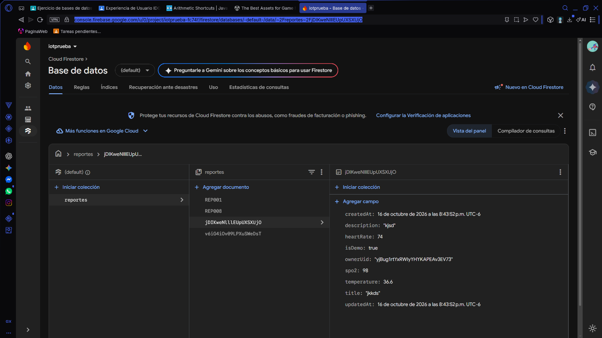
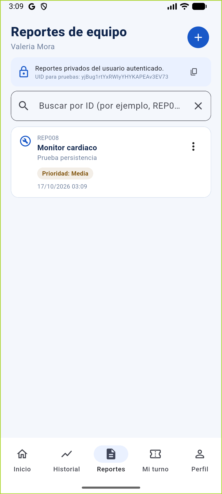
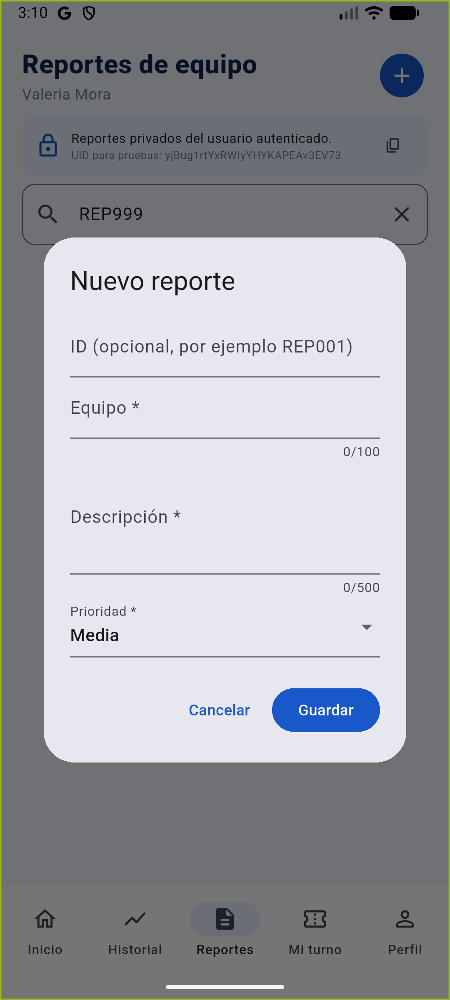

Práctica 8: Evaluación de calidad de software mediante pruebas de caja negra
- Alumno
- Víctor Emanuel Rodríguez Ochoa
- Grupo
- IDGS14
- Maestro
- Manuel Contreras Castillo
- Fecha de revisión
- 23 de octubre de 2026
- Proyecto
- BioMedica Paciente
- Alcance
- PostgreSQL, API, reportes Firestore y mediciones Wear OS
1. Objetivo y alcance
Evaluar, desde entradas y resultados observables, si BioMedica cumple sus
funciones principales, valida datos, conserva los reportes y comunica errores.
Se revisaron autenticación, navegación por roles, reportes y registro de
mediciones Wear OS. Desde la versión 1.3.0+5, cuentas, roles,
asignaciones y mediciones se gestionan mediante API/PostgreSQL; los reportes
siguen en Firestore y solo los consulta el backend.
Esta revisión combina los casos automatizados presentes en
test/widget_test.dart y test/reports_screen_test.dart,
el código de interfaz y reglas, y las capturas previamente guardadas en el
repositorio. No se considera que una regla escrita pero no publicada sea una
prueba de autorización efectiva en el servicio.
- Flutter: 52/52 pruebas aprobadas.
- API: 6/6 pruebas aprobadas con base de datos simulada; no se conectó a una instancia PostgreSQL.
- Análisis:
flutter analyzesin incidencias. - Dependencias de producción del backend:
npm audit --omit=dev, 0 vulnerabilidades.
La inspección encontró que la versión inicial del registro solo comprobaba
que el correo contuviera @ y que el repositorio de reportes
dependía de la validación de la interfaz. En 1.2.0+4 se incorporaron cuentas,
roles, asignaciones y mediciones persistentes; en 1.3.0+5 esos
datos migran a PostgreSQL. La API almacena reportes en Firestore y las reglas
deniegan el acceso directo desde clientes. Despliegue, migración de datos y
pruebas de autorización real siguen pendientes. El checklist está en
CHECKLIST_VALIDACIONES_PRACTICA_8.md.
2. Inventario de funcionalidades revisadas
| Área | Entradas | Salidas y cambios observables | Estado / limitación conocida |
|---|---|---|---|
| Acceso / registro | Correo, nombre de registro y contraseña. | API valida la cuenta en PostgreSQL; nuevas cuentas inician con rol paciente. | Implementado en código; URL, secretos y PostgreSQL de Render deben configurarse. |
| Inicio y navegación | Selección de Inicio, Historial, Reportes, Mi turno y Perfil. | Cambia el contenido de pantalla; Inicio enlaza a Reportes y Mi turno. | Un solo perfil visible: paciente. Datos de turno y wearable pueden ser demostrativos. |
| Reportes: crear y consultar | ID opcional, equipo, descripción y prioridad. | Alta en colección reportes, lista ordenada por fecha y búsqueda por ID. | CRUD validado con repositorio simulado; persistencia y errores en Firestore/Render siguen pendientes. |
| Reportes: modificar y eliminar | Reporte seleccionado y nuevos valores; confirmación de eliminación. | Actualiza datos o quita el documento de la lista, con mensaje de resultado. | Pruebas de interfaz con repositorio falso y capturas Android existentes. |
| Acceso a datos | Token de sesión, rol relacional y UID propietario/asignaciones. | La API autoriza roles; Firestore conserva solo reportes y no es accesible directamente desde móviles. | Implementado en código; configuración de Render/Firestore y pruebas cruzadas pendientes. |
| Mediciones Wear OS | Lectura reciente de frecuencia cardiaca del sensor. | Paciente guarda valor, hora, dispositivo y fuente en PostgreSQL measurements. | Código conectado; falta probar con Galaxy Watch físico y API desplegada. |
| Datos de salud opcionales | SpO₂ o temperatura disponibles desde un sensor compatible. | Guarda esos campos si la fuente realmente los proporciona. | No todos los relojes los exponen; no se inventan valores ni diagnósticos. |
3. Criterios de evaluación
- Verificado: el resultado esperado aparece en una prueba automatizada del flujo o en evidencia visual congruente.
- Parcial: existe implementación y/o prueba con sustituto (fake), pero falta confirmación de extremo a extremo contra el servicio real o de una condición límite.
- Pendiente: no se encontró evidencia suficiente para afirmar el resultado; no se atribuye aprobación por inspeccionar código solamente.
- Una prueba negativa se acepta si la entrada inválida deja cero cambios persistidos y presenta el mensaje esperado. Una prueba positiva de alta debe producir exactamente un registro con los campos visibles esperados.
4. Requisitos y casos de caja negra
Los 18 requisitos y sus casos quedan completados como especificación: cada uno tiene entradas/restricciones, resultado esperado, criterio de aceptación y estado documental. “Completado” en esta tabla significa que el requisito y su caso están definidos y registrados; no declara que todos hayan aprobado una ejecución contra servicios reales. Los casos TC01–TC11 describen pruebas de reportes; los casos de acceso, mediciones y permisos también incluyen sus escenarios y criterios.
La ejecución integral sigue condicionada: los casos que requieren Render/PostgreSQL, Firestore publicado, cuentas reales o un Galaxy Watch permanecen identificados en la sección 6 y en el checklist.
| ID | Tipo | Entrada y restricción | Resultado / criterio de aceptación medible | Caso y evidencia / limitación | Estado del requisito y caso |
|---|---|---|---|---|---|
| REQ-001 | Operación principal | Crear reporte con equipo, descripción no vacíos y prioridad válida. | Al guardar una vez aparece un documento con el ID y los tres valores introducidos; el listado muestra exactamente ese reporte. | TC01; captura del reporte REP001 en Figura 1. |
Completado |
| REQ-002 | Operación principal | Consultar lista y buscar un ID existente o inexistente; búsqueda sin distinguir mayúsculas. | El ID existente queda visible; para un ID sin coincidencia se muestra estado vacío y no se produce excepción. | TC06 cubre el resultado inexistente; Figuras 1 y 2 muestran lista y búsqueda vacía. | Completado |
| REQ-003 | Operación principal | Editar un reporte existente, cambiando su prioridad a otra opción disponible. | Después de guardar, la tarjeta muestra la prioridad nueva y conserva el ID del reporte. | TC04 y Figura 3 (prioridad actualizada). | Completado |
| REQ-004 | Operación principal | Solicitar eliminar un reporte y confirmar la acción. | Tras confirmar, el ID deja de aparecer y el repositorio queda sin ese registro; cancelar no debe eliminarlo. | TC05 comprueba eliminación confirmada; Figura 4 muestra lista vacía posterior. | Completado |
| REQ-005 | Validación | Enviar equipo y descripción vacíos o compuestos solo por espacios. | Se muestran los mensajes de campo obligatorio y el número de documentos creados permanece en 0. | TC02 y captura de formulario vacío en practica_firestore_evidencias/03-formulario.png. |
Completado |
| REQ-006 | Validación | Introducir equipo de más de 100 caracteres o descripción de más de 500. | El formulario rechaza cada campo que exceda su máximo; no debe persistirse el registro. | TC11 y las pruebas de health_report_validation_test.dart comprueban límites exactos y excedidos. Falta confirmar el rechazo en la API desplegada. |
Completado |
| REQ-007 | Validación | Seleccionar prioridad fuera del catálogo Baja, Media o Alta. | El usuario solo puede elegir esas tres opciones y la API debe rechazar cualquier otro valor. | TC01/TC04 verifican valores permitidos; falta prueba negativa contra la API desplegada. | Completado |
| REQ-008 | Validación | Crear un ID que ya existe o intentar incluir una barra /. |
El ID duplicado se rechaza sin sobrescribir el reporte anterior; una barra no se acepta como ID. | TC03 prueba duplicado en repositorio falso y TC10 rechaza la barra en UI; Figura 5 no demuestra rechazo en la API real. | Completado |
| REQ-009 | Persistencia | Crear reporte válido, cerrar/reabrir la app y volver a consultar. | ID, equipo, descripción y prioridad siguen iguales después de reiniciar; un documento válido no se pierde. | TC08 recrea pantalla con fake; Figuras 6 y 7 documentan persistencia real antes/después según el reporte existente. | Completado |
| REQ-010 | Consistencia | Editar un reporte existente o eliminar un ID inexistente; comprobar ID y fechas. | Editar conserva el ID y createdAt, actualiza updatedAt; borrar ID inexistente no cambia datos y comunica el error. |
API/repositorio implementan esas restricciones; Figura 8 muestra documento inexistente. No hay aserción automatizada de las dos marcas de tiempo. | Completado |
| REQ-011 | Acceso / validación | Correo vacío o mal formado, más de 254 caracteres, contraseña inferior a 8 o superior a 30 y credenciales incorrectas. | El formulario y la API validan entradas; PostgreSQL autentica la cuenta y el hash no se expone al cliente. | Pruebas automatizadas cubren validación local y API simulada; falta validar contra Render y PostgreSQL. | Completado |
| REQ-012 | Navegación | Seleccionar cada uno de los cinco destinos inferiores y abrir Reportes desde la navegación disponible. | Se muestra la pantalla correspondiente al destino sin excepción ni pérdida del estado de sesión. | Se observan cinco destinos en el shell y Reportes en las capturas; no se encontró prueba que recorra todos los destinos. | Completado |
| REQ-013 | Permisos | Consultar, editar o borrar como otro UID o sin sesión autenticada. | El servicio deniega acceso a documentos ajenos; no se lee ni modifica información entre propietarios. | La API aplica permisos por UID y rol; falta desplegarla y comprobar aislamiento con usuarios distintos. | Completado |
| REQ-014 | Manejo de errores | Perder conexión al guardar o recibir error de consulta/configuración de la API. | Se muestra mensaje accionable, no se informa éxito falso, el listado ofrece reintento y no se añade dato no guardado. | TC07 simula fallo de escritura con fake; la API dispone de estados de error. Falta desconexión real reproducible. | Completado |
| REQ-015 | Reglas de negocio / alcance | Registrar cuenta o entrar con credenciales desde la pantalla de acceso. | La API valida credenciales y roles en PostgreSQL; cada registro nuevo obtiene rol paciente y no se concede privilegio desde el cliente. | Integración incluida en 1.3.0+5; falta probar con la API desplegada. | Completado |
| REQ-016 | Permisos por rol | Administrador cambia el rol de una cuenta y asigna pacientes a un médico. | El médico consulta únicamente reportes/mediciones de los UID asignados; el administrador consulta todas las cuentas y el paciente solo las propias. | Panel y autorización del backend implementados; no se ejecutó prueba cruzada en Render/PostgreSQL. | Completado |
| REQ-017 | Persistencia de mediciones | Guardar explícitamente una lectura del sensor de pulso reciente, con autenticación de paciente. | Se crea un registro inmutable en PostgreSQL con propietario, hora de lectura, hora de registro, fuente, dispositivo y frecuencia cardiaca; fuente de demostración o lectura vencida se rechazan. | Validación de modelo y API incluida; no se probó todavía con reloj Galaxy Watch ni PostgreSQL desplegado. | Completado |
| REQ-018 | Seguridad clínica | Consultar valores de frecuencia cardiaca y campos opcionales disponibles. | La app presenta los registros sin diagnóstico, alerta clínica ni recomendación automática. | Los datos simulados no se guardan; el código no aplica reglas clínicas. | Completado |
5. Evidencias
Las figuras siguientes reutilizan archivos que ya están en el proyecto. Las capturas prueban el estado visual, pero no sustituyen los registros de ejecución de pruebas ni demuestran por sí solas autorización en el servidor.






Las evidencias de acceso de la versión anterior están en
practica5_evidencias/: 02_campos_vacios.png,
03_error_generico.png, 04_limite_30_caracteres.png,
05_prueba_datos_invalidos.png,
06_acceso_simulado_valido.png y
07_logcat_sin_credenciales.png.
6. Requisitos pendientes de verificar
- Desplegar el servicio API/PostgreSQL en Render, configurar credenciales de Firestore y compilar la APK con la URL pública de la API.
- Migrar perfiles, roles, asignaciones y mediciones; restablecer contraseñas tras verificar la identidad de los usuarios.
- Probar login, creación duplicada y permisos de paciente/médico/admin contra Render y PostgreSQL reales.
- Desplegar reglas que bloquean acceso directo de clientes a Firestore y verificar que el backend aún consulta reportes.
- Repetir CRUD de reportes, duplicados y persistencia contra Firestore real por medio de la API.
- Reproducir pérdida real de red durante alta y consulta y confirmar que no se muestra éxito falso.
- Completar los casos de UI aún no cubiertos: búsqueda positiva, cancelar eliminación y eliminación de un ID inexistente.
- Instalar companion y app en un Galaxy Watch/teléfono emparejados; comprobar permiso del sensor y persistencia en PostgreSQL real.
- Probar la actualización de la APK en un dispositivo Android con la URL de API de producción.
- El proyecto no ha sido validado clínicamente; no usarlo para diagnóstico, alertas ni decisiones médicas.
7. Conclusión y decisión de liberación
Resultado de la ejecución automatizada: aprobaron 52 de 52 pruebas Flutter y 6 de 6 pruebas del backend; el análisis estático pasó y la auditoría de dependencias de producción reportó cero vulnerabilidades. El proyecto cuenta con 18 requisitos documentados y supera el mínimo de la práctica.
La evidencia disponible respalda validaciones locales y flujos CRUD con repositorio falso. La aceptación integral de la entrega queda condicionada: Render/PostgreSQL no están desplegados desde este entorno, la migración no se ha ejecutado y aún faltan pruebas de roles, red y hardware. Por ello, no se recomienda liberar para uso clínico hasta probar la API, las reglas Firestore y el reloj. La aplicación no emite diagnósticos.
El resultado no significa que todos los escenarios de aceptación estén completados: las suites API usan PostgreSQL simulado y no se desplegó Render. Firestore, roles con usuarios reales, migración, conexión de red y reloj físico siguen pendientes.